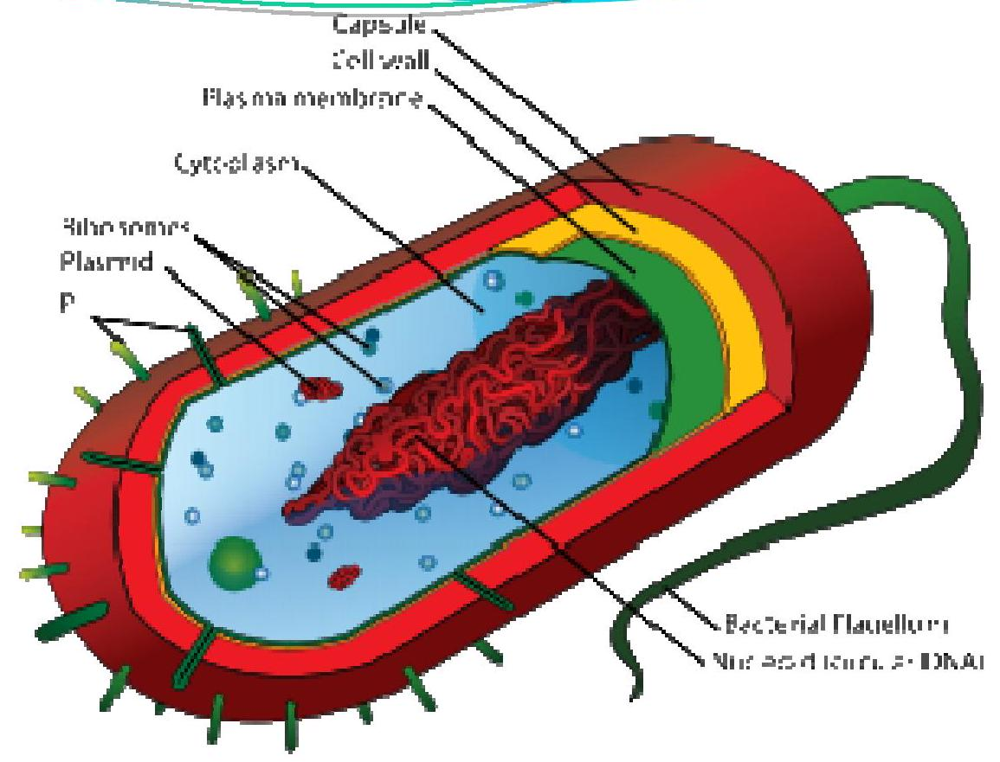
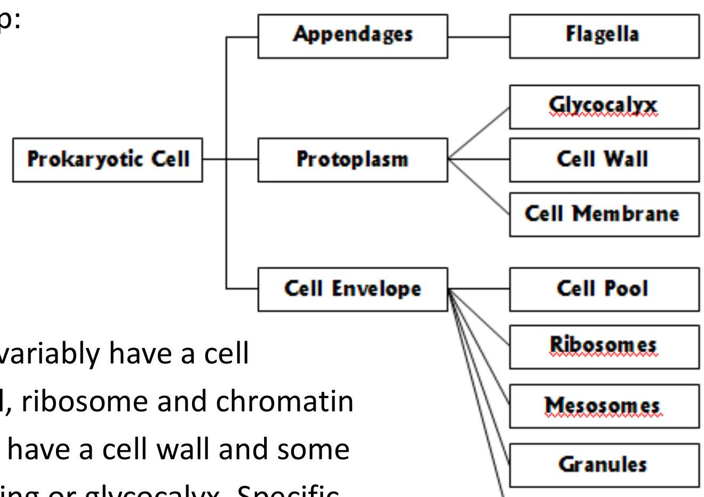
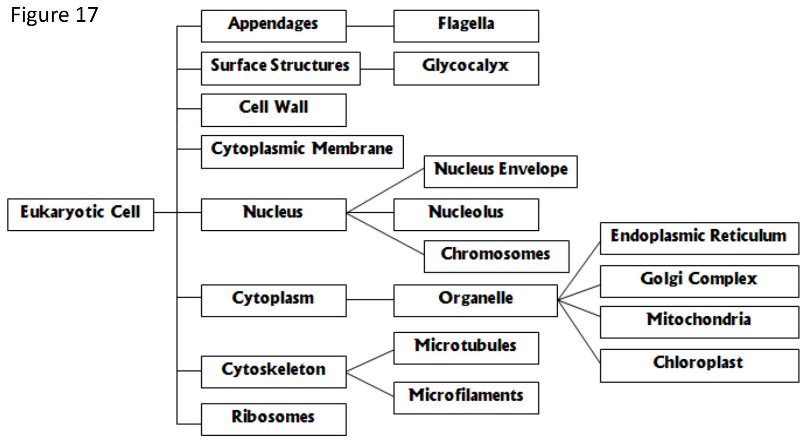
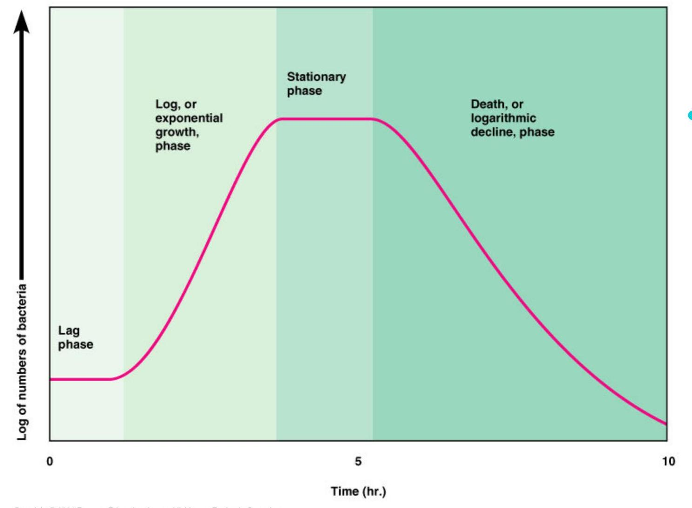

Module 1: Introduction to Microbiology & Microorganism
Learning Objective
- Knows the basic knowledge of microbes.
- Explain the importance of observation made by Hooke and Van Leeuwenhoek.
- Compare the theories of spontaneous generation and biogenesis.
- Differentiate among the major group of organism of studied in microbiology.
- List several ways in which microbes affect our lives.
1.1 Microbes in our lives
- Living things too small to be seen with the unaided eye are called microorganisms.
- Microorganism is important in the maintenance of an ecological balance on earth.
- Some microorganisms live in humans and other animals and are needed to maintain the animal's health.
- Some microorganisms are used to produce foods and chemicals.
- Some microorganism cause disease.
1.2 A Brief History of Microbiology
1.2.1 The First Observation
- Robert Hooke observed the plant material was composed of 'little boxes'; he introduced the term cell.
- Hooke's observations were the groundwork for development of the cell theory, the concept that all living things are composed of cells.
- Anton Van Leeuwenhoek, using a simple microscope, was the first to observe microorganisms.
1.2.2 Hypothesis of the Origin of the Microorganism
Two hypotheses attempted to explain the origin of the microbes:
- Biogenesis - They arose only from other living things of their same kind.
- Theory of Spontaneous Generation - They arose spontaneously from something non living.
The debate over Spontaneous Generation
- Until the mid - 1880s, many people believed in spontaneous generation, the idea that living organisms could arise from nonliving matter.
- Francesco Redi demonstrated that maggots appear on decaying meat only when flies are able to lay eggs on the meat.
- Louis Pasteur demonstrated that microorganisms are in the air everywhere and offered proof of biogenesis by using various shapes of swan necked flasks.
1.3 The Diversity of Microorganisms
1.3.1 Bacteria
- Bacteria are unicellular organisms. Because they have no nucleus, the cells are describes as prokaryotic.
- The three major basic shapes of bacteria are bacillus, coccus and spiral. It also vary in size (0.1um to 5um).
- Most bacteria have a peptidoglycan cell wall; they divide by binary fission; and they may possess flagella.
- Bacteria can use a wide range of chemical substances for their nutrition.
1.3.2 Fungi
- Fungi (mushroom, molds and yeast) have eukaryotic cells (with true nucleus). Most fungi are multi cellular.
- Fungi obtain nutrients by absorbing organic material from their environment.
1.3.3 Protozoa
- Protozoa are unicellular eukaryotes and classified according to their means of locomotion.
- Protozoa obtain nourishment by absorption or ingestion through specialized structures.
1.3.4 Algae
- Algae are unicellular or multi cellular eukaryotes that obtain nourishment by photosynthesis.
- Algae produce oxygen and carbohydrates that are used by other organisms.
1.3.5 Viruses
- Viruses are non-cellular entities that are parasites of cells.
- Viruses consist of a nucleic acid core surrounded by a protein coat. An envelope may surround the coat.
1.4 The Impact of Microorganism on Human Affairs
1.4.1 Microorganisms as a decomposer
- Microorganisms degrade dead plants and animals and recycle chemical elements to be used by living plants and animals.
- For examples, bacteria are use to decompose organic matter in sewage and microbes decompose food into simple molecules.
1.4.2 Microorganisms as a nitrogen fixer
- Some bacteria live in nodules on a plant roots.
- Atmospheric nitrogen compounds that the plants can use for growth.
Nitrogen fixer bacteria
1.4.3 Microorganisms and the food industry
- Dairy Product (cheese, yogurt, yogurt drinks, chocolate)
- Baked goods
- Alcoholic beverages
- Tempeh (Indonesian traditional food)
- Pickles
- Vinegar
Module 2: Methods for Studying Microorganism
Learning Objective
After reading this module, students should be able to;
- Define total magnification & resolution.
- Identify a use for dark field, phase-contrast, DIC, and florescence microscopy and compare each with bright field illumination.
- List the step in preparing a Gram stain, and describe the appearance of gram positive and gram negative cells after each step.
2.1 Microscope
- Microscope is an instrument that magnifies the size of image of an object to be seen with the naked eyes.
- The two key characteristics of a reliable microscope are;
-
Magnification
- the ability to enlarge image of an object. A compound light microscope uses multiple lenses to refract light to achieve magnification.
- total magnification is the product of the magnifying powers of the individual lenses where:
Power of objective $\mathbf{x}$ Power of ocular $=$ Total Magnification
$$\begin{aligned} 4 \mathrm{x} \times 10 \mathrm{x} & =40 \mathrm{x} \\ 10 \mathrm{x} \times 10 \mathrm{x} & =100 \mathrm{x} \\ 30 \mathrm{x} \times 10 \mathrm{x} & =300 \mathrm{x} \\ 100 \mathrm{x} \times 10 \mathrm{x} & =1000 \mathrm{x} \end{aligned}$$ -
Resolution/ Resolving Power (R)
- the resolving power $(R)$ of an microscope is the closest spacing between 2 point at which the point can still be seen clearly as separate entities.
- the resolving power of a light microscope depends on the wavelength of light ( $\lambda$ ) and a property of the objective lens, called the numerical aperture (NA)
$$\mathrm{R}=0.5 \lambda / \mathrm{NA}$$
-
Magnification
2.2 Bright field Microscope
- From it image, when light is transmitted through specimen.
- The specimen, being denser and more opaque then its surrounding absorbs some of this light, and the rest of the light is transmitted directly up to through the ocular into the field.
- As a result, the specimen will produce an image that is denser then surrounding brightly illuminated field.
- Can be used for both live, unstained material and preserved, stained material.
2.3 Dark field Microscope
- Used for examining live microorganisms that either are invisible in the ordinary light microscope.
- Use a dark field condenser that contains an opaque disk. The disk blocks light that would enter the objective directly. Only light that is reflected off (turned back from) the specimen enters the objective lens. Because there is no direct background light, the specimen appear light against a black background.
- Frequently used to examine unstained microorganisms suspended in liquid.
- Example microbe -Treponema pallidum
2.4 Phase Contrast Microscope
- It permits detailed examination of internal structure in living organism. Not attach the microbes to the microscope slide.
- Based on slight variations in refractive index. As rays pass from the light source through the specimen, their velocity may be altered by differences in the thickness and physical properties of various portion of the specimen.
- Light rays passing through the specimen are diffracted (bent) differently and travel different pathway (out of phase with one another) to reach eye of the viewer.
- Details of the internal structure of the specimen also become more sharply defined in phase-contrast microscope. The internal detail of a cell appear as degrees of brightness against a dark background.
- This microscope used the special condenser that contains an annular (ring shaped) diaphragm. The diaphragm allows a ring of light to pass through the condenser, focusing light on the specimen and a ring shaped diffraction (phase) plate in the objective lens.
- The diffraction and undiffracted rays are then bought into phase with each other to produce the image that meets the eye.
2.5 Fluorescence Microscope
- Takes advantages of florescence of substances.
- Florescence absorb short wavelength substances absorb short wavelengths of light (v)
- Give off light at longer wavelength that can be seen by the use of the special light filters.
2.6 Staining
- Staining means coloring a microorganism with a dye to make some structure more visible.
- Fixing uses air and heat to attach microorganism to a slide.
- Differential stains, such as the gram stain and acid fast stain, divide bacteria into groups according to their reaction to the stains.
- The gram-stain produce uses the purple stain (crystal violet) iodine as a mordant, an alcohol decolorized and the red counter stain.
- Gram-positive bacteria retain the purple stain after decolorization step: gram negative bacteria do not and thus appear pink from the counter stain.
- Acid fast bacteria, such as members of the genera Mycobacterium and Nocardia, retain carbolfuchin after acid alcohol decolorization and appear red; non acid fast bacteria take up the methylene blue counter stain and appear blue.
Module 3: Prokaryotic and Eukaryotic Cells
Learning Objective
After reading this module, students should be able to;
- Define prokaryotic and eukaryotic cell.
- Define and explain each organelle function of prokaryotic cell.
- Define and explain each organelle function of eukaryotic cell.
3.1 Cell
- The cell is the fundamental organizational unit of all living systems, including microorganisms.
- It provides the essential basis for organization, growth, metabolism, reproduction and heredity, which are the critical functions that comprise the essential characteristics of life.
- There are two different types of cells of living organisms:
- prokaryotic cells (cells lacking a nucleus)- bacteria
- Eukaryotic cells (cells with a nucleus)- protozoa, algae and fungi
- All cells have some common properties regardless of whether their organizational structure is prokaryotic or eukaryotic. Cell of all organisms:
- are highly organized
- are capable of growth and reproduction
- contain the same heredity molecule - DNA (deoxyribonucleic acid)
3.2 Prokaryotic Cell
The prokaryotic cell is more primitive and simple than eukaryotic cell. It does not have membrane bound compartments, called organelles, that serve specialized functions, as occurs in eukaryotic cells. A prokaryotic cell does not have a nucleus and the heredity information (DNA) of a prokaryotic cell is not separated from the other constituents within the specialized organelle from the rest of the contents is of prime importance in distinguishing prokaryotic from eukaryotic cells.

General Cellular Organization of a Prokaryotic Cell
The general cellular organization of a prokaryotic cell can be represented with the following micro map:

From of surface coating or glycocalyx. Specific structures that are found in some, but not all are flagella, capsules, slime layers and granules.
3.2.2 Flagella
The primary function of flagella is to confer motility or self-propulsion that is, the capacity of a cell to swim freely through an aqueous habitat. As the flagellum rotates, it causes the cell body to spin in the opposite direction and gives the cell a forward motion.
(Refer to Figure 14 and 15 - Note: Figures not provided in source MMD.)
3.2.3 The Cell Envelope
The cell envelope is the complex of layers external to the cell protoplasm. The layers of the envelope are stacked one upon another and are often tightly bonded together. The three basic layers that can be identified are:
- The glycocalyx
- The cell wall
- The cell membrane
Function of cell membrane:
- To regulate transport - that is the passage of nutrients into cell and the discharge of wastes.
- Enzyme secretion - the enzymes of respiration are located at the membrane. Macromolecules (carbohydrate, protein and fat) cannot permeate through the cell membrane. The enzyme is needed to brake the macromolecules.
- Cell membrane provides a site for the functions such as energy reactions, nutrient processing and synthesis.
3.2.4 Protoplasm
Protoplasm is a prominent site for many of the cell's biochemical and synthetic activities. Its major component is water (70-80%), which serves as a solvent for the cell pool, a complex mixture of nutrients, including sugars, amino acids and salts.
The components of this pool serve as building blocks for cell synthesis or as sources of energy. Also contains larger, discrete cells masses such as the chromatin body, ribosomes, mesosomes and granules.
- Chromatin bodies - the heredity material of bacteria exists in the form of a single circular strand of DNA designated as the chromatin body or bacterial chromosome. By the definition, bacteria do not have a nucleus that is their DNA is not enclosed by a nuclear membrane, but instead is aggregated in a dense area of the cell called the nucleoid.
- Ribosomes - a bacterial cell contains thousands of tiny, discrete units called ribosomes. Ribosomes is where the protein synthesis is performed.
- Cytoplasmic inclusion/ granules - Inclusion bodies/ granules contain condensed, energy - rich organic substance including glycogen, fat and phosphate.
3.2.5 Bacterial Endospore
Only certain bacteria have endospore. This type of bacteria is called an endospore because it is produced inside a cell. Endospore is formed when the environment is not suitable for the bacteria to be reproductive.
3.3 Eukaryotic Cell
All eukaryotic microbial cells have a cytoplasmic membrane, nucleus, mitochondria, endoplasmic reticulum, golgi apparatus, vacuoles and cytoskeleton.
A cell wall, locomotor appendages, chloroplasts and glycocalyx are found only in some groups.

3.3.1 Flagella
The eukaryotic flagellum is thicker, structurally more complex and covered by an extension of the cell membrane.
3.3.2 Surface Structures
There are 3 basic layers:
- Glycocalyx - An outermost boundary that comes in direct contact with the environment. This structure is usually composed of polysaccharides. The glycocalyx contributes to protection, adherence of cells to surfaces and reception of signals from other cells and from the environment.
- Cell wall - Cell walls of algal and fungal cells are rigid and provide structural support and shape. Fungal cell walls have a thick, inner layer of polysaccharide fibers composed of chitin or cellulose and a thin outer layer of mixed glycans. (Refer to Figure 18 - Note: Figure not provided)
- Cytoplasmic membrane - The cytoplasmic membrane of eukaryotic cells is a typical bilayer of lipids in which protein molecules are embedded. Also contain sterols.
3.3.3 The Nucleus: The Cell Control Center
The nucleus is a compact sphere that is the most prominent organelle of eukaryotic cells. It is separated from the cell cytoplasm by an external boundary called a nuclear envelope.
Nucleus contains chromosomes that bring the genetic information (DNA). In the nucleus, nucleolus produce components that are used to build protein.
3.3.4 Endoplasmic Reticulum (ER)
There are two kinds of ER:
- rough endoplasmic reticulum (RER)
- Smooth endoplasmic reticulum (SER)
The RER originates from the nucleus membrane and extends in a continuous network through the cytoplasm even to the cell membrane. This is to permits the RER to transport materials from the nucleus to cytoplasm.
The RER appears rough because of large numbers of ribosome partly attached to its membrane. Protein are synthesized on the ribosome.
The SER is a closed tubular network within ribosome that functions in nutrient processing and synthesis and storage of non protein macromolecules such as lipids, sterols and glycogen.
3.3.5 Ribosome : Protein Synthesizers
Ribosome are numerous, tiny particles and distributed in two ways:
- Some are scattered freely in cytoplasm
- Others associated with the RER as previously described
3.3.6 Mitochondria
The function of mitochondria is to supply energy.
Respiration process in the cristae (inner membrane), extract energy from the nutrient molecules and stores it in the form of high-energy molecules or ATP (adenosine tryphosphate critae).
3.3.7 Chloroplasts
Chloroplasts are only found in algae and plant cells that are capable of converting of energy of sunlight into chemical energy through photosynthesis.
3.3.8 Golgi Complex
This Organelle is always closely associated with the endoplasmic reticulum, both in its location and function.
Module 4: Bacterial Growth
Learning Objective
After reading this module, students should be able to;
- Define and describe each bacterial growth phases.
- Identify environmental factors that influence microbial growth.
Microbes that are provided with nutrients and the required environments factors become metabolically active and grow.
Growth take place on two levels:
- A cell builds up protoplasm and increases its size.
- The number of cells in the population increases.
4.1 The Basis of Population Growth: Binary Fission
The division of a bacterial cell occurs mainly through binary fission; binary means that one cell become two.
During binary fission, the parent cell enlarges, duplicates its chromosome and forms a central transverse septum that divides the cell into two daughter cells.
This is repeated at intervals by each new daughter cell in turn, and with each successive round of division the population increases.
(Refer to Figure 20 - Note: Figure not provided in source MMD.)
4.2 The Rate of Population Growth
The time required for a complete fission cycle - form parent cell to two new daughter cells - is called the generation, or doubling time.
Each new fission cycle or generation increases the population by a factor of 2 or doubles it.
Example: 1 cell → 2 cells → 4 cells → 8 cells → 16 cells → 32 cells
As long as the environment remains favorable, this doubling effect can continue at a constant rate. The length of the generation time is a measure of the growth rate of an organism. The average generation time is $30-60$ minutes under optimum conditions.
Examples:
- Mycobacterium leprae - 10-30 days
- Salmonella enteritidis - 20-30 days
- Staphylococcus aureus
| Organism | Temperature (°C) | Generation Time (min) |
|---|---|---|
| Bacillus stearothermophilus | 60 | 11 |
| Escherichia coli | 37 | 20 |
| Bacillus subtilis | 37 | 27 |
| Bacillus mycoides | 37 | 28 |
| Staphylococcus aureus | 37 | 28 |
| Streptococcus lactis | 37 | 30 |
| Lactobacillus acidophilus | 37 | 75 |
| Mycobacterium tuberculosis | 37 | 360 |
| Treponema pallidum | 37 | 1980 |
| Anabaena cylindrical | 25 | 840 |
4.3 Phase of Bacterial Growth

Data of growth period of 3-4 days, from a system of batch culturing produces a curve with a series of phases which are:
- lag phase
- exponential phase / log phase
- stationary phase
- death phase
The batch culture describe meaning that nutrients and space are finite and there is no mechanism for the removal of waste products.
4.3.1 Lag Phase
The growth curve of a bacterial culture begins with the lag phase.
In this phase, the bacteria are transporting nutrients inside the cell from the new medium, preparing for reproduction and synthesizing DNA and various inducible enzymes needed for cell division.
They increase in size during this process but the number of cell does not increase.
4.3.2 Exponential Phase
In the exponential phase, also called the log growth phase, bacterial cell division begins. One cell divides to form two, each of these cells divides to form four and so forth.
During the log phase of growth, bacterial reproduction occurs at a maximal rate for the specific set of growth conditions.
Growth during much of the exponential growth phase is said to be balanced, that is the concentrations of all macromolecules of the cell are increasing at the same rate.
During the log phase of the growth curve, the growth rate of a bacterium is proportional to the biomass of bacteria that is present.
4.3.3 Stationary Phase
During this phase there is no further increase in bacterial cell numbers. Cells in the stationary phase have a different chemical composition from cells in the exponential phase.
In the stationary phase, the growth rate is exactly equal to the death rate. A bacterial population may reach stationary growth when:
- a required nutrient is exhausted
- inhibitory end products accumulate
- physical conditions change
4.3.4 Death Phase
The death phase start from the number of viable cells begins to decline.
The kinetic of bacterial death, like those of growth, are exponential because the death phase really represents the result of the inability of the bacteria to carry out further reproduction.
4.4 Environmental Factors That Influence Microbes
Microbes are exposed to a wide variety of environmental factors in addition to nutrients.
One aim in ecology is to account for the ways that microorganisms deal with or adapt to such factors as heat, cold, gases, acid, radiation, osmotic and hydrostatic pressures and even other microbes.
4.4.1 Temperature Adaptation
Microbial cells are unable to control their temperature. Their survival is dependent on adapting to whatever temperatures are encountered in the habitat.
The range of temperatures for microbial growth can be expressed as:
- Minimum temperature - is the lowest temperature that permits a microbe's continued growth and metabolism; below this temperature, its activities are inhibited.
- Maximum temperature - is the highest temperature at which growth and metabolism can proceed. If the temperature rises slightly above maximum, growth will stop, but if it continues to rise beyond that point, the enzymes and nucleic acids will eventually become permanently inactivated and the cell will die. This is why heat works so well as an agent in microbial control.
- Optimum temperature - covers a small range, intermediate between the minimum and maximum, which promotes the fastest rate of growth and metabolism.
Another way to express temperature adaptation is to describe whether an organism grows optimally in a cold, moderate or hot temperature range. The terms used for these ecological groups are psychrophile, mesophile and thermophile.
- A psychrophile is a microorganism that has an optimum temperature below $15^{\circ} \mathrm{C}$ and is capable of growing at $0^{\circ} \mathrm{C}$. It is obligate with respect to cold and generally cannot grow above $20^{\circ} \mathrm{C}$.
- Mesophiles - organisms that grow at intermediate temperatures. The optimum growth temperatures (optima) of most mesophiles fall into the range of $20^{\circ} \mathrm{C}-40^{\circ} \mathrm{C}$. Most human pathogens have optima somewhere between $30^{\circ} \mathrm{C}$ and $40^{\circ} \mathrm{C}$ (human body temperature is $37^{\circ} \mathrm{C}$). Ex: Bacillus and Clostridium.
- Thermophile is a microbes that grows optimally at temperatures greater than $45^{\circ} \mathrm{C}$. Such heat-loving microbes live in soil and water associated with volcanic activity and in habitats directly exposed to the sun. Thermopiles vary in heat requirements, with a general range of growth of $45^{\circ} \mathrm{C}-80^{\circ} \mathrm{C}$.
4.4.2 Gas Requirements
The atmospheric gases that most influence microbial growth are oxygen and carbon dioxide. Oxygen has the greatest impact on microbial adaptation. With respect to oxygen requirements, several general categories are recognized.
- Aerobe (aerobic organism) - grows well in the presence of normal atmospheric oxygen and processes the enzymes needed to process toxic oxygen products.
- Obligate aerobe - organism that cannot grow without oxygen. Ex: Bdellovibrio and Xanthomonas.
- Facultative anaerobe - is an aerobe that does not require oxygen for its metabolism and is capable of growth in the absence of oxygen. This type of organism metabolizes by aerobic respiration when oxygen is present, but in its absence, it adopts an anaerobic mode of metabolism such as fermentation. Ex: Bacterial pathogens - Gram-negative enteric bacteria and Staphylococcus.
- Microaerophile - does not grow at normal atmospheric tension of oxygen, but requires a small amount of it in metabolism. Most organisms in this category live in a habitat that provides small amounts of oxygen but is not directly exposed to the atmosphere.
- Anaerobe (anaerobic microorganism) does not grow in normal atmospheric oxygen.
- Strict / obligate anaerobes - they cannot tolerate any free oxygen in the immediate environment and will die if exposed to it. Growing anaerobic bacteria usually requires special media, methods of incubation and handling chambers that exclude oxygen. Ex: Clostridium, Trichomonas, Bacteroides.
- Aerotolerant anaerobes - do not utilize oxygen, but can survive in its presence and these anaerobes are not killed by oxygen.
4.4.3 Effect of pH
Microbial growth and survival are also influenced by the pH of the habitat. The pH is defined as the degree of acidity or alkalinity (basicity) of a solution. It is expressed by the pH scale, a series if numbers ranging from 1 to 14. As the pH value decreases toward 0, the acidity increases and as the pH increases toward 14, the alkalinity increases.
Majority of organisms do not live or grow in high or low pH habitats, because acid and base can be highly damaging to enzymes and other cellular substances.
The optimum pH range for most microorganisms is between 6 and 8, and most human pathogens grow optimally at a pH of 6.5 to 7.5.
Module 5: Microorganisms Important in Food Microbiology
Learning Objective
After reading this module, students should be able to;
- Define characteristic of mold, yeast and bacteria.
- Know the requirements of mold, yeast and bacteria.
- Identify several genus of mold, yeast and bacteria help in food industry.
5.1 Molds
Mold growth on foods, with its fuzzy and cottony appearance, is familiar to everyone and usually food with a moldy is considered unfit to eat.
But certain molds are useful in the manufacture of certain foods or ingredients of foods.
Some kinds of cheese are moldripened, ex; blue, Roquefort, Camambert, Brine, etc and molds are used in making oriental foods, ex; soy sauce, tapai, and tempeh.
5.1.1 General Characteristics of Molds
The term 'mold' is a common one applied to certain multicellular, filamentous fungi whose growth on foods usually is readily recognised by its fuzzy or cottony appearance.
The main part of the growth commonly appears white but may be colored or dark or smoky. Colored spores are typical of mature mold of some kinds and give color to part or all of the growth.
- Moisture requirements - In general most molds require less available moisture than do most yeasts and bacteria.
- Temperature requirements - Most molds would be considered mesophilic ie. able to grow well at ordinary temperatures. The optimal temperature for most molds is around 25 to $30^{\circ} \mathrm{C}$, but some grow well at 35 to $37^{\circ} \mathrm{C}$ or above, ex. Aspergillus spp. and some at still higher temperatures.
- Oxygen and pH requirements - Molds are aerobic ie. they require oxygen for growth. Most molds can grow over a wide range of pH ( pH 2 to 8.5) but the majority are favoured by an acid pH.
5.1.2 Molds of Industrial Importance
Several molds of industrial importance are outlined by genus.
a. Mucor
- Mucor are involved in the spoilage of some foods and the manufacture of others. M. racemosus. M. rouxii is used in the process for the saccharafication of starch and mucors help ripen some cheeses and are used in making certain oriental foods.
b. Rhizopus
- Rhizopus is very common and is involved in the spoilage of many foods ex; berries, vegetables, bread, etc.
c. Aspergillus
- They are very widespread. Many are involved in the spoilage of foods and some are useful in the preparation of certain foods.
- A. flavus-oryzea is important in making of some oriental foods and the production of enzymes.
5.2 Yeasts
Yeasts may be useful or harmful in foods. Yeasts fermentation are involve in the manufacture of foods such as bread, wines, vinegar, and surface ripened cheese etc. Yeasts are undesirable when they cause spoilage of fruit juices, syrups, honey, jellies, meats and other foods.
5.2.1 General Characteristics of Yeast
The form of yeasts may be spherical, oval, lemon-shaped or cylindrical. They also differ in size. Most common yeasts grow best with a plentiful supply of available moisture. Yeasts can grow in the presence of greater concentrations of solutes (such as sugar or salt) than most bacteria. The optimum temperature for growth of most yeasts in around 25 to $30^{\circ} \mathrm{C}$ and the maximum about 35 to $47^{\circ} \mathrm{C}$.
5.2.2 Yeasts of Industrial Importance
a. Genus Saccharomyces
- S. cerevisiae is employed in many food industries, ex; bread making, wine, production of alcohol.
5.3 Bacteria
5.3.1 Lactic Acid-Forming Bacteria or Lactic
The most important characteristic of the lactic acid bacteria is their ability to ferment sugars to lactic acid.
This may be desirable in making products such as sauerkraut and cheese.
The major genera include Leuconostoc, Lactobacillus, Streptococcus and Pediococcus.
Module 6: Contamination of Foods
Learning Objective
After reading this module, students should be able to;
- Define and describe 7 natural sources of microorganisms that can contaminate foods.
There are various natural sources of microorganisms that can contaminate foods include from green plants and fruits, animals, sewage, soil, water, air and during handling and processing.
6.1 From Green Plants and Fruits
The natural surface flora of plants varies with the plant but usually includes species of Pseudomonas, Micrococcus and coliforms, and lactic acid bacteria.
Lactic acid bacteria include Lactobacillus brevis and plantarum, Streptococcus feacalis and Lauconostoc dextranioum. Bacillus spp, yeasts and molds also may be present.
The numbers of bacteria will depend on the plant and its environment and may range from a few hundred or thousand per square centimetre of surface to millions.
The surface of a well-washed tomato, may show 400-700 microorganisms per square centimetre, while and unwashed tomato would have several thousand. Exposed surfaces of plants become contaminated from soil, water, sewage, air and animal, so that microorganisms from these sources are added to be natural flora.
6.2 From Animals
Sources of microorganisms from animals include:
- the surface flora
- the flora of the respiratory tract
- the flora of the gastrointestinal tract
The feathers and feet of poultry carry heavy contamination from similar sources. The skin of many meat animals may contain micrococci, staphylococci and streptococcus.
Staphylococci on the skin or from the respiratory tract may find their way on to the carcass and then to the final product. The feces and fecal-contaminated products of animals can contain many enteric organisms, including Salmonella.
Many infection disease agents of animals can be transmitted to people via foods.
6.3 From Sewage
When untreated domestic sewage is used to fertilize plant crops, there is a likelihood that raw plant foods will be contaminated with human pathogens, especially those causing gastrointestinal diseases.
6.4 From Soil
The soil contains the greatest variety of microorganisms of any source of contamination, Bacillus, Clostridium, Micrococcus, Streptococcus and Modern methods of food handling usually involve washing the surfaces of foods and hence the removal of much of the soil from those surfaces and care is taken to avoid contamination by soil dust.
6.5 From Water
Natural waters contain not only their natural flora but also microorganisms from soil and possibly from animals or sewage.
The kinds of bacteria in natural waters are species of Pseudomonas, Proteus, Micrococcus, Bacillus, Streptococcus and Escherichia.
6.6 From Air
Contamination of foods from the air may be important for sanitary reason. Disease organism, especially those causing respiratory infection, may be spread among employees by air or the food product may become contaminated.
Total numbers of microorganisms in a food may be increased from the air, especially if the air is being used for aeration of the product, as in growing bread yeast. Mold spores from air may give trouble in cheese, meat, sweetened condensed milk and sliced bread.
6.7 During Handling and Processing
Additional contamination may come from equipment coming in contact with foods, from packaging materials and from personnel.
Module 7: Food Preservation
Learning Objective
After reading this module, students should be able to;
- Identify 4 methods of food preservation.
- Define and discuss deeply on pasteurization.
- Discuss on freezing, chilling and drying methods.
Most kinds of food are readily decomposed by microorganisms.
Preservation of food is achieved when special methods are used.
7.1 Methods of Food Preservation
Some of the widely methods of food preservation are as follows:
- Use of high temperatures
- Use of low temperatures
- Drying
- Use of chemical preservatives
7.2 Preservation By Use of High Temperatures
The temperatures and time used in heat-processing a food will depend on what effect heat has on the food and what other preservative methods are to be employed.
The greater the heat treatment the more organisms will be killed up to the heating that will produce sterility of the product. The various degrees of heating used on foods might be classified as:
- pasteurization
- heating at about $100^{\circ} \mathrm{C}$
- heating above $100^{\circ} \mathrm{C}$
7.2.1 Pasteurization
Pasteurization is a heat treatment that kills part but not all of the microorganisms present and usually involves the application of temperatures below $100^{\circ} \mathrm{C}$.
Pasteurization is used when:
- More rigorous heat treatment might harm the quality of the product (milk).
- One aim is to kill pathogens (milk).
- The main spoilage organisms are not very heat resistant (yeast in fruit juices).
- When any surviving spoilage organisms will be taken care of by additional preservative methods to be employed as in the chilling of market milk.
- When competing organisms are to be killed, allowing a desired fermentation, usually by added starter organisms, as in cheese making.
Times and temperatures used in the pasteurizing process depend on the method employed and the product treated. For example:
- Milk is pasteurized at:
- $62.8^{\circ} \mathrm{C}$ for 30 min
- $71.7^{\circ} \mathrm{C}$ for 15 sec
- $137.8^{\circ} \mathrm{C}$ for 2 sec
- Ice cream mix be heated at:
- $71.1^{\circ} \mathrm{C}$ for 30 min
- $82.2^{\circ} \mathrm{C}$ for 16 to 20 sec
7.2.2 Heating at about $100^{\circ} \mathrm{C}$
Home canners processed all foods for varying lengths of time at $100^{\circ} \mathrm{C}$ or less. This treatment was sufficient to kill everything but bacterial spores in the food and often was sufficient to preserve even low - and medium - acid foods.
A temperature of approximately $100^{\circ} \mathrm{C}$ is obtained by:
- boiling a liquid food
- immersion of the food container in boiling water
- exposure to flowing steam
Heat processing includes:
- Baking - the internal temperature of bread, cake or other bakery product approaches but never reaches $100^{\circ} \mathrm{C}$ as long as moisture is present, although the oven is much hotter.
- Roasting - in roasting meat the internal temperature reaches only about $80^{\circ} \mathrm{C}$.
- Frying - frying gets the outside of the food very hot, but the centre ordinarily does not reach $100^{\circ} \mathrm{C}$.
- Blanching - blanching fresh vegetables before freezing or drying involves heating briefly at about $100^{\circ} \mathrm{C}$.
7.3 Preservation by Use of Low Temperature
Low temperatures are used to stop chemical reactions and action of food enzymes and to slow down the growth and activity of microorganisms in food.
Each microorganism present has an optimal temperature for growth and a minimal temperature, below which in cannot multiply.
As the temperature drops from this optimal temperature toward the minimal, the rate of growth of the organism decreases and is slowest at the minimal temperature. Cooler temperature will prevent growth, but slow metabolic activity may continue.
7.3.1 Chilling or Cold Storage
Chilling storage is at temperature not far above freezing and usually involves cooling by ice or by mechanical refrigeration.
Most perishable foods, including eggs, dairy products, meats, seafood, vegetables and fruits may be held in chilling storage for a limited time with little change from their original condition.
Enzymatic and microbial change in the foods are not prevented but are slowed down.
The temperature of a refrigerator is mechanically controlled but varies in different parts, usually between 0 and $10^{\circ} \mathrm{C}$.
7.3.2 Freezing or Frozen Storage
Microbial growth in frozen foods is prevented entirely and the action of food enzymes is greatly retarded. The lower the storage temperature, the slower will be any chemical or enzymatic reactions.
There are 2 types of freezing:
- Slow freezing - the temperature is usually $-23.3^{\circ} \mathrm{C}$ or less $\left(-15^{\circ} \mathrm{C}\right.$ to $\left.-29^{\circ} \mathrm{C}\right)$, take $3-72$ hours.
- Quick freezing (the food is frozen in a relatively short time 30 min or less, temperature $-17.8^{\circ} \mathrm{C}$ to $45.6^{\circ} \mathrm{C}$).
7.4 Preservation by Drying
Drying is usually accomplished by the removal of water. For example: Dried fish may be heavily salted so that moisture is drawn from the flesh and bound by solute and hence is unavailable to microorganisms. For sweetened condensed milk, sugar may be added to reduce the amount of available moisture.
Heat applied during a drying process causes a reduction in total numbers of microorganisms, but the effectiveness varies with the kinds and numbers of organisms originally present and the drying process employed.
Usually all yeasts and most bacteria are destroyed, but spores of bacteria and molds commonly survive.
Some of the methods used for drying are as follows:
- Solar drying - Solar drying is limited to climates with a hot sun and a dry atmosphere and to certain foods such as raisins, fish, rice, etc.
- Drying by mechanical dryers.
- Drying during smoking.
Module 8: Food Fermentation
Learning Objective
After reading this module, students should be able to;
- Define food fermentation.
- Identify food productions involve fermentation process and microbes involved.
Microorganisms are used in the food industry for food production.
Many of the foods and beverages we commonly enjoy, such as yogurt and cheese, are the products of microbial enzymatic activity.
The production of fermented foods requires the proper substrates, microbial populations and environmental conditions to obtain the desired end product.
Quality control is essential in food fermentation to ensure that the product is high quality.
8.1 Fermented Dairy Products
Numerous products are made by the microbial fermentation of milk, including yogurt and many cheeses. The fermentation of milk is primarily carried out by lactic acid bacteria.
Lactic acid is produced during fermentation and acts as a natural preservative.
8.1.1 Yogurt
Yogurt is made by fermenting milk a mixture of Lactobacillus bulgaricus and Streptococcus thermophilus or with Lactobacillus acidophilus. Yogurt fermentation is carried out at $40^{\circ} \mathrm{C}$.
8.1.2 Cheese
Various cheese are produced by microbial fermentation. Cheeses consist of milk curds that have been separated from the liquid portion of the milk (whey). The curdling of milk is accomplished by using the enzyme rennin and lactic acid bacterial starter cultures.
Cheese are classified as:
- soft cheese - high water content (50 to 80%)
- semi hard cheese - water content is about 45%
- hard cheese - low water content (less than 40%)
Cheese are also classified as:
- unripened - if they are produced by single-step fermentation
- ripened - if additional microbial growth is required during maturation of the cheese to achieve the desired taste, texture and aroma.
The natural production of cheese involves lactic acid fermentation, with various mixtures of Lactococcus and Lactobacillus species used as starter cultures to initiate the fermentation.
8.1.3 Leavening of Bread
Yeasts are added to bread dough to ferment the sugar, producing the carbon dioxide that leavens the dough and causes it to rise.
8.1.4 Vinegar
The production of vinegar involves 2 steps:
- Conversion of carbohydrates to alcohol by anaerobic fermentation by Saccharomyces cerevisiae.
- followed by a secondary oxidative transformation of the alcohol to form acetic acid by Acetobacter and Gluconobacter.
or the direct conversion of glucose to acetate by Clostridium species.
The starting materials for the production of vinegar may be fruits such as grapes, oranges, apples, pears; vegetables such as potatoes.
8.1.5 Soy Sauce
Oriental foods are prepared by fermenting soybeans or rice. Soy sauce is produced by Aspergillus oryzae.
8.1.6 Tempeh
Tempeh is an Indonesian food produced from soybeans. The soybeans are soaked at $25^{\circ} \mathrm{C}$, dried and inoculated with spores of Rhizopus. The mash is incubated at $32^{\circ} \mathrm{C}$ for 20 hours, during which mycelia growth occurs.
Module 9: Food-borne Diseases
Learning Objective
After reading this module, students should be able to;
- Define food poisoning.
- Identify two kinds of food intoxications caused by bacteria.
- Discuss on common food/sources causing food poisoning, common disease and treatments after ingested, prevention step to avoid food poisoning.
'Food poisoning' is the applied to diseases caused by microorganisms. The term is used to include both illnesses caused by:
- the ingestion of toxins produced by the organisms.
- result from infection of the host through the intestinal tract.
Therefore:
- A bacterial food intoxication refers to food-borne illnesses caused by the presence of a bacterial toxin formed in the food.
- A bacterial food infection refers to food-borne illnesses by the entrance of bacteria into the body through ingestion of contaminated foods and the reaction of the body to their presence or to their metabolites.
There are two kinds of food intoxications caused by bacteria:
- Botulism - caused by the presence in food of toxin produced by Clostridium botulinum.
- Staphylococcal intoxication - caused by a toxin in the food from Staphylococcus aureus.
9.1 Botulism
Botulism is a disease caused by the ingestion of food containing the neurotoxin produced by Clostridium botulinum.
The food
The food involved in botulism usually foods that are inadequately processed home-canned foods, such as sweet corn, asparagus, peas, tomatoes and also preserved meats and fish.
The disease
People are so susceptible to botulism that if appreciable amounts of toxin are present. Consumption of very small pieces of food can cause illness and death. The typical symptoms of botulism usually appear within 12 to 36 hours. The earliest symptoms usually are an acute digestive disturbance followed by nausea and vomiting and possibly diarrheal, together with fatigue, dizziness and a headache. Later there is constipation. Double vision may be evident early and difficulty in swallowing and speaking may be noted. Patients may complain of dryness of the mouth and constriction of the throat and the tongue may become swollen and coated. Involuntary muscles become paralyzed. Paralysis spreads to the respiratory system and heart, and death usually result from respiratory failure. In fatal case, death usually comes within 3 to 6 days after the poisonous food has been ingested, but the period may be shorter or longer.
The prevention
The prevention methods and precautions of botulism include:
- use of approved heat processes for canned foods.
- rejection of all gassy (swollen) or otherwise spoiled canned foods.
- refusal even to taste a doubtfully food.
- avoidance of foods that have been cocked, held and not well reheated.
- boiling of a suspected food for at least 15 minutes.
9.2 Staphylococcus Food Intoxication
One of the most commonly occurring food poisonings is caused by the ingestion of the enterotoxin formed in food during growth of certain strains of Staphylococcus aureus. The toxin in termed on enterotoxin because it causes gastroenteritis or inflammation of the lining of the intestinal tract.
The Food
Custard and cream-filled bakery goods, ham and poultry have caused the most outbreaks in Staphylococcus food poisoning. Other foods include meats and meat products, fish and fish products, milk and milk products, salads, pudding, custards, pies and salad dressings.
The Disease
Individual differ in their susceptibility to Staphylococcus poisoning. The incubation period for this kind of poisoning usually is 2 to 4 hour. The most symptoms are salivation, then nausea, vomiting, abdominal cramping and diarrheal. Blood and mucus may be found in stools in severe cases. Headache, muscular cramping, sweating, weak pulse and shallow respiration may occur. The mortality is extremely low.
Prevention
The prevention of staphylococcus food poisoning outbreaks include:
- prevention of contamination of the food with the staphylococci
- prevention of the growth of staphylococci
- killing staphylococci in foods
Contamination of foods can be reduced by general methods of sanitation, by using ingredients free from the cocci; ex, use pasteurized milk and by keeping employees away from foods when these workers have staphylococcal infections. Growth of the cocci can be prevented by adequate refrigeration of foods.
9.3 Salmonellosis
Salmonellosis may result following the ingestion of viable cells of the member of the genus Salmonella. It is the most frequently occurring bacterial food infection. In addition to the typical food-poisoning salmonellosis syndrome, there are two other disease syndromes result by consumption of salmonella, which is typhoid fever and parathyphoid fever.
The Source
The important source of salmonella are poultry and their eggs and rodents, and also come from cats, dogs and cattle. About one-third of all the food products involved in salmonella outbreak are meat and poultry products. Infected rodents, rats and mice, may contaminate unprotected foods with their feces and thus spread Salmonella bacteria. Flies may play an important role in the spread of Salmonella, especially from contaminated faecal matter to foods. Roaches apparently also can spread the disease.
The Disease
Incubation period for salmonellosis usually 12 to 36 hr . The principal symptoms of a Salmonella gastrointestinal infection are nausea, vomiting, abdominal pain and diarrheal that usually appear suddenly. This may be proceeded by a headache and chills. Other evidences of the disease are muscular weakness, usually a moderate fever, restlessness and drowsiness. Usually the symptoms persist for 2 to 3 days.
Prevention
Three main principles are involved in the prevention of outbreaks of food-borne Salmonella infections.
- avoid contamination of the food from salmonella sources such as diseased human being / animals and carriers and ingredients carrying the organisms.
- destruction of the organisms in foods by heat when possible, as by cooking or pasteurization.
- prevention of the growth of Salmonella in foods by adequate refrigeration.
9.4 Enteropathogenic Escherichia coli
E.coli O157:H7 is an emerging cause of food borne illness. This strain produces a powerful toxin and can cause severe illness.
The Source
The organism can be found on a small number of cattle farms and can live in the intestines of healthy cattle. Meat can become contaminated during slaughter and organisms can be thoroughly mixed into beef when it is ground. Bacteria present on the cow's udder or on equipment may get into raw milk.
The Food
Eating meat, especially ground beef, that has not been cooked sufficiently to kill E. coli O157:H7 can cause infection. Drinking unpasteurized milk and swimming in or drinking sewage-contaminated water can also cause infection.
The Disease
Bacteria in diarrheal stools of infected persons can be passed from one person to another if hygiene or hand washing habits are inadequate. This is particularly likely among toddlers who are not toilet trained. Family members and playmates of these children are at high risk of becoming infected.
E. coli O157:H7 infection often causes bloody diarrheal and abdominal cramps, sometimes the infection causes nonbloody diarrheal or no symptoms. Usually little or no fever is present, and the illness resolves in 5 to 10 days.
In some persons, the infection can also cause a complication called haemolytic uremic syndrome, in which the red blood cells are destroyed and the kidneys fail.
The Treatment
Most persons recover without antibiotics or other specific treatment in 5-10 days. Haemolytic uremic syndrome is a life-threatening condition usually treated in an intensive care unit. Blood transfusions and kidney dialysis are often required. With intensive care, the death for haemolytic uremic syndrome is 3-5%.